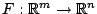
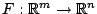

Next: About this document ...
Inexact Newton methods for underdetermined systems
Joseph Simonis
82 Parker Ave, Holden MA 01520
jpsimoni@wpi.edu
Extending Newton's method to solving  where
 is continuously
differentiable and
where
 is continuously
differentiable and  , requires solving an
underdetermined linear system for the Newton step at each
iteration. When the step is the pseudo-inverse solution, the
resulting method is sometimes called the normal flow method.
Like Newton's method, it usually is easy to implement, has a
simple and useful local convergence theory and, in its pure
form, is not well suited for solving large-scale problems.
In this talk I will present variations of the normal flow
method analogous to inexact Newton methods and globalized
inexact Newton methods. These methods have been developed to
improve the robustness and efficiency of the normal flow
method on large-scale problems. Preliminary computational
results on some simple problems will be presented. This work
was done in collaboration with my advisor Homer Walker at
Worcester Polytechnic Institute.
, requires solving an
underdetermined linear system for the Newton step at each
iteration. When the step is the pseudo-inverse solution, the
resulting method is sometimes called the normal flow method.
Like Newton's method, it usually is easy to implement, has a
simple and useful local convergence theory and, in its pure
form, is not well suited for solving large-scale problems.
In this talk I will present variations of the normal flow
method analogous to inexact Newton methods and globalized
inexact Newton methods. These methods have been developed to
improve the robustness and efficiency of the normal flow
method on large-scale problems. Preliminary computational
results on some simple problems will be presented. This work
was done in collaboration with my advisor Homer Walker at
Worcester Polytechnic Institute.
Bruce Fast
2006-03-11